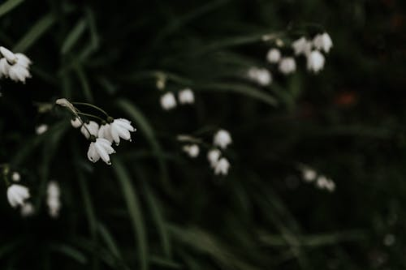

LÍRIO DO VALE

O que é?
O Lírio do Vale é uma planta rasteira famosa por suas flores brancas pendentes que parecem pequenos sinos. É uma das flores mais raras e caras do mundo da perfumaria devido ao seu aroma inconfundível. Originária do hemisfério norte, ela é um símbolo clássico da chegada da primavera e do retorno da felicidade.
Como cuidar?
Diferente de outras flores, o Lírio do Vale prefere o frescor e a sombra:
- Luz: Ele ama sombra total ou meia-sombra. O sol forte do meio-dia pode murchar a planta rapidamente.
- Solo: Precisa de um solo rico em húmus, sempre úmido e muito bem drenado.
- Rega: A terra deve estar constantemente úmida, mas nunca encharcada. Ele não gosta de períodos de seca.
- Clima: Prefere climas frios. É uma planta que "dorme" no inverno e ressurge com força total na primavera.
Curiosidades
- Tradição Francesa: Na França, é tradição oferecer ramos de Lírio do Vale no dia 1º de maio para desejar boa sorte.
- Buquês Reais: Foi a flor escolhida para os buquês de noiva da Princesa Grace Kelly e da Duquesa Kate Middleton.
- Beleza Tóxica: Apesar de linda e cheirosa, toda a planta é tóxica se ingerida; por isso, deve ser mantida longe de crianças e pets.
- Perfume Único: O cheiro do Lírio do Vale é impossível de extrair naturalmente em grandes quantidades, sendo quase sempre recriado sinteticamente pelos melhores perfumistas.